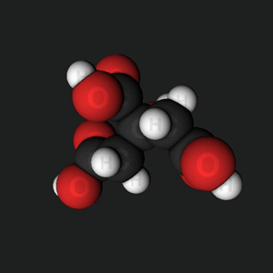
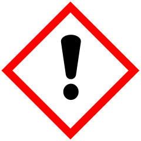

Tin (II) chloride
SnCl
2
Solution 1M

MEL Science bottle
Solution
Molecular structure
Safety

WARNING
Harmful if swallowed
Causes severe skin burns and eye damage
Precautionary statements
Wear protective gloves/protective clothing/eye protection/face protection
Rinse cautiously with water for several minutes. Remove contact lenses, if present and easy to do. Continue rinsing.
Download MSDS
Properties
Other names
Stannous chloride
Tin salt
Tin protochloride
CAS number
7772-99-8 Yes
Molar mass
189.616 g/mol
Concentration
18.9 g/100 ml
Tin (II) chloride in Wikipedia
Experiments